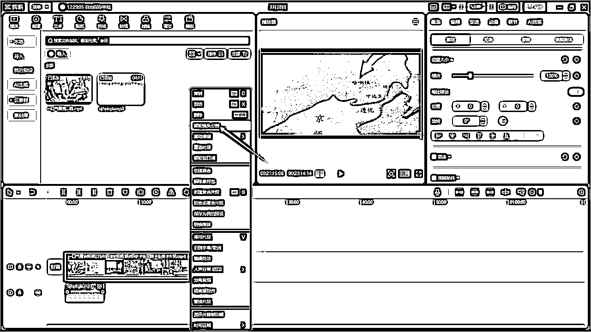

来源：https://puojikpj98.feishu.cn/docx/KUNad8Y0UoFHEexMyAfc7sA1nQf
大家好，我是大铭，一个37岁转型中的大叔，创办了一个叫漫步进化的社群（目前就只有我自己一个，哈哈……）希望可以共同成长，如果有想了解我的朋友，可以看我之前发的文章
一位37岁大叔的硬核自我介绍：https://t.zsxq.com/18JaHjlva
我会持续分享我的项目经验和个人成长相关的知识到生财，一个是为了逼自己持续输出输入，另外也希望为生财做出贡献。
可能我分享的内容其他人或其他平台都有分享过，不过每个人的观点和方法也有可能有差异，大家可以做对比选择更好的直接拿去用。
如果我有说得不对的地方，大佬们帮忙指出
这是在生财分享的第一个项目：
简单：可以说一点门槛没有，是个人有手都可以做
占用时间短：特别适合作为副业去跑，只要持续矩阵输出
长期持续：只要吸引大量观众，靠广告都可以得到很好的睡后收入，而且当粉丝量达到一定程度也可以通过短视频带货，效果也是不错，当然也可以通过开课收学徒进行变现。
引流：可以通过视频钩子引流到私域进行二次销售
可根据你自己喜欢制作的内容进行平台选择，我这里以中国历史为例，一般这种中视频观众以中老年男性为主
只要制作一条视频你就可以在多个平台同时发布，如中老年男性比较多的平台：短视频、今日头条，当然你也可以在抖音、快手等平台发布，但要注意要有视频分成计划的平台上发布才能有收益。
找对标就根据你喜欢的内容直接在抖音上收即可，像历史类的我这边提供两个做得比较好的


一开始可能比较少，但只要你坚持发布视频，就会持续增长
需要做矩阵的圈友，相信大家在生财也能找到很多对应的矩阵教程，我这边就简单介绍一下。
手机卡：必须要一机一卡，用流量去操作，如果是刚注册的手机号码，通讯录里最好能存十个以上的联系人电话，这样不容易被判定为营销号，而且千万不要使用不正规的电话卡，如物联网卡，流量卡等等。
实名认证：注册账号后可以先不急着实名，等你视频有了收益需要提现后再进行实名。
昵称：如果你讲的是历史故事，那你就取 “**讲历史”，“**说历史”即可。如果你做的是其他内容，例如是动物世界，那就取 “**看动物”，“**萌宠”等，这个可以看看对标跟住模仿就行。
头像：用跟内容对应的头像，历史就用历史人物的卡通形象或影视图片（推荐一个账号专门写一个朝代，这样更垂直），动物时间就用动物的图片（动物的也可以只讲一种动物）
简介：这个也是可以参照对标来写，如“专注于三国时期的解说”就可以了
背景：背景图你可以找一些好看的国画做背景
文字转语音工具：用于生成文案后文字转语音的工具，这种软件市面上有很多，包括剪映里也有这个功能，知识音色比较少，而我用的是文字语音转换大师，因为我以前花了98元买了终身会员，所以一直在用，而且这个平台还有很多其他转换的功能，性价比挺高。
这里面也有很多音色可以选择，而且也可以另外付688元克隆自己的音色，但我觉得没这个必要。
AI平台：这个就不必多说了，大家都知道，就是用来做原创文案的，大家可以直接选择免费的文心一言，有chatGPT那就更好，但都没太大关系。
剪映：剪辑视频，大家都懂
抖音：下载别人的视频进行二次剪辑
视频下载：我用的是亨亨猫，这个是需要付费的，但挺好用
去重软件：用于视频的二次去重用，我这样用的是“CR多功能剪辑视频工具”
视频发布：用于一键同步所有平台，我用的是“易媒助手”，大家如何其他更好的软件也可以在评论区分享一下
首先我们先罗列出问题（以下问题可以自行修改，如只写某个朝代的某位将军的故事等，这样每天都有不一样的内容）：
（1）你知道明朝的历史吗？
（2）请你根据明朝历史写一篇不少于1500字的故事，从建立到毁灭的全部过程，要求内容丰富有故事性，让人愿意读下去。
（3）请对以上内容做简单介绍
（4）请根据范例将此标题改得更有吸引力，字数不少于20字，并给出五个标签，范例：“一口气看完大清第一女强人，慈溪太后的一生#历史#清朝历史#清朝历代帝王#清朝故事”
打开文心一言，将这些问题一一喂给AI

好，这样文案、介绍、标题都有了，可以进行下一步操作。
将刚刚生成的文案复制到转换大师中，进行配音，选择自己喜欢的配音和设置就可以开始转换

打开抖音，搜索“明朝历史”找到比较好的视频，点进去后，复制他的视频链接
打开哼哼猫去水印，将网址复制进去，点击“提取”按钮，等下发有视频出来就可以点击“下载”按钮进行下载了
好，音频素材和视频素材都准备好以后就可以开始剪辑了
（1）首先我们打开剪映，将视频和音频都放好，将原视频的声音关掉

（2）原视频一般都会有字幕，我们只要将视频的比例放大，把字幕的位置隐藏掉即可
下面进行第一步去重，比较重要，就是将视频进行内容打乱，形成新的视频
右键视频，选择智能视频分割

将分割好的视频进行随机调换顺序，越乱越好，然后把多余的视频删除
然后生成字幕
为了让去重更有效，我们加入画中画，放多一个视频，并将它的声音消除，把透明度调成1%，这样整个视频基本完成，我们将视频导出后就可以进行下一步操作。
刚刚在剪映里我们对视频的顺序进行打乱和进入画中画，算是第一次去重，然后我们现在进行第二次去重，打开去重软件“CR多功能剪辑视频工具”，如果没有这款软件的圈友可以找我拿一下，这个软件是破解的。
跟我下面截图那样设置就行
都设置完成后直接点击开始处理就行，到这里原创视频已经完成。
就像上面介绍时说的，我们根据内容和视频收益选择好平台，使用一键多平台发布工具，进行视频发布。
打开“易媒助手”，上传剪辑好的视频，然后将我们刚刚用文心一言生成的标题、简介、标签都复制进去

选择需要发布的平台后，点击发布即可，你也可以根据客户群体日常高峰时间段选择定时发布

整个项目的基本流程已经跑一次，大家只要坚持地每天剪辑发布视频，相信很快都可以拿到正反馈，如果有不明白的圈友也可以提问，我能解答的都会尽量解答。总之这是个非常低成本而且容易操作的项目，只需要每天跟着我的步骤重复操作即可。
当然任何一个项目都有它的优势，也有它的劣势，这个项目的劣势就是非常简单，也咩啥成本，任何人都能做，就会很容易形成竞争激烈的情况，但我们只要坚持，熬到其他人都熬不过你，剩下你的时候，你就是这个赛道的赢家。
后面我还会继续分享更多的项目，希望与大家一起共同进步。